Computational Analysis of the Protein Data
1 Physicochemical Features by Organism
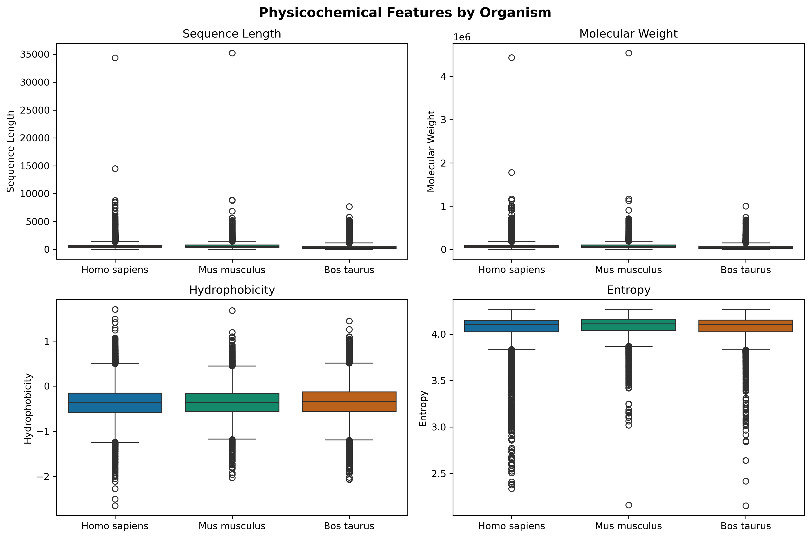
Sequence Length & Molecular Weight: All three organisms show similar right-skewed distributions with medians around 400-500 amino acids (~50 kDa), with extreme outliers reaching 15,000-35,000 residues. This reflects: typical proteome architecture is dominated by moderate-sized proteins.
Hydrophobicity: Median values cluster near -0.4. This indicates proteins are slightly hydrophilic overall—optimal for solubility in aqueous cellular environments. The narrow interquartile range (-0.3 to -0.6) advocates for universal constraints on membrane association and folding stability referenced from further study.
Sequence Entropy: High median values (~4.1-4.2 bits) demonstrate that proteins across all species maintain high sequence complexity with diverse amino acid usage, avoiding repetitive or biased compositions.
The striking similarity across Human, Mouse, and Cow indicates that: fundamental biophysical constraints on protein properties are conserved across ~100 million years of mammalian evolutionary divergence.
2 Feature Correlation Heatmap
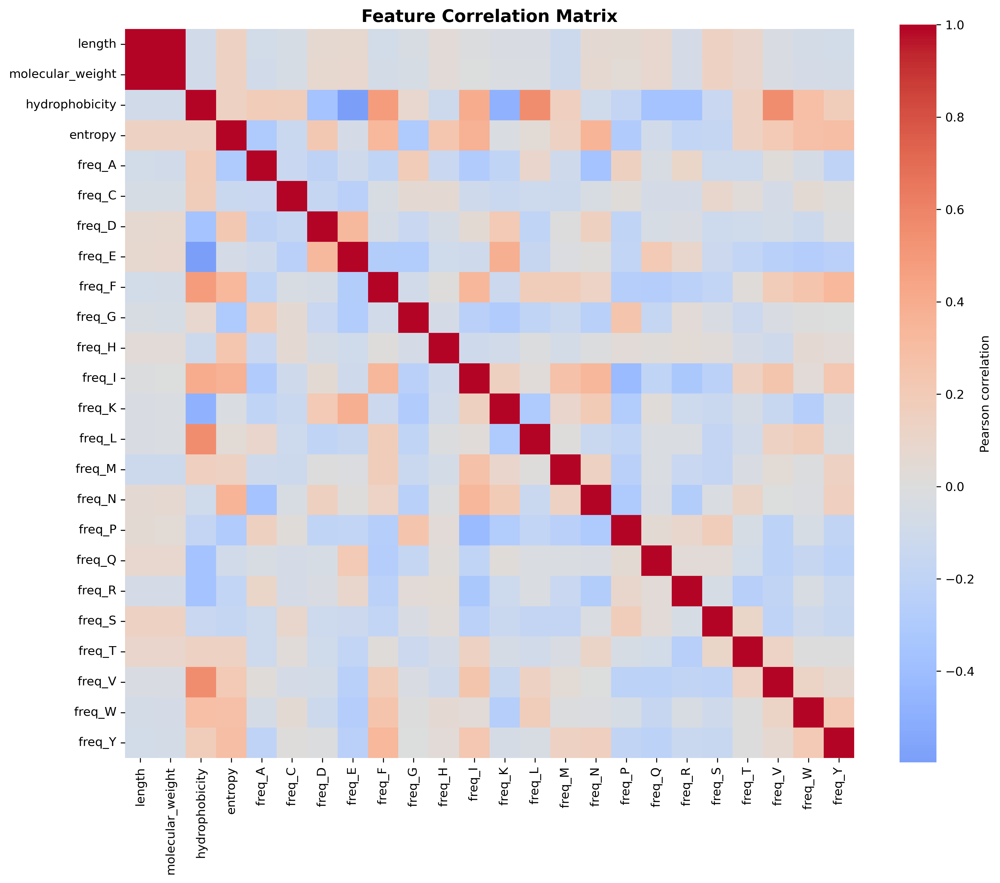
Length and molecular weight show near-perfect correlation (r > 0.9, deeper red), confirming linear scaling.
Hydrophobicity correlates positively with I, L, M, V (orange) and negatively with E, K, Q (blue). The negative correlation arrises as a result of those amino acids being charged residues of the protein sequence.
Entropy and hydrophobicity show predominantly weak correlations (|r| < 0.4, light colors) with each other and most amino acid frequencies. So we decided to use those as independent features on many occasions for this study.
The amino acid frequency block displays mixed positive/negative correlations reflecting sum-to-one constraints rather than biological antagonism.
The sparse correlation structure between most of these features justifies their combined use in modeling.
3 Top Amino Acid Pairs by Mutual Information
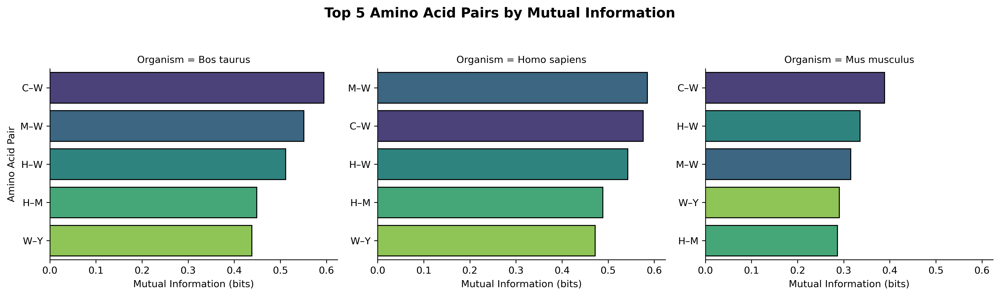
With 20 amino acids, there are 190 possible unique pairs. Displaying all accross 3 organisms that is \(190 * 3\) would obscure the strongest signals. So discuss the top 5 pairs per organism to tackle biological meaningfulness ,non-random associations while maintaining readability.
Tryptophan (W) appears in 4 of 5 top pairs across all organisms. Note that is the rarest amino acid yet shows the strongest co-occurrence patterns. This suggests it occupies specialized structural or functional niches (e.g.- active sites, protein-protein interfaces, or disulfide-adjacent positions: referenced from further study).
Cysteine pairs like C–W and C–M rank highest in cow and human. This reflects their shared roles in metal binding, redox chemistry, and disulfide bridge formation.
The same amino acid pairs dominate across all three species with similar MI magnitudes (0.25–0.6 bits) indicates these are not species-specific adaptations but universal constraints on protein sequence architecture.
4 Allometric Scaling with Protein Length
4.1 Hydrophobicity
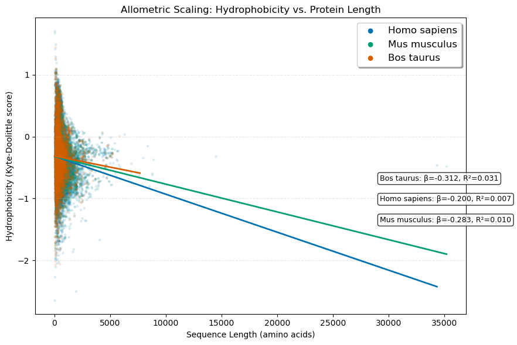
All three organisms exhibit consistent negative slopes (β = -0.20 to -0.31), indicating that longer proteins are systematically less hydrophobic than shorter ones. So this is suggestive of larger proteins maintaining solubility by reducing hydrophobic residue content.
Low R² values (0.007–0.031) indicate length contributes to only a little to hydrophobicity variance. Yet the consistent direction and statistical significance (p < 10⁻¹) confirm this is a real, biologically meaningful trend rather than noise.
So we deduce from further study on top of this results that larger proteins likely reduce hydrophobicity to prevent aggregation, ensure proper folding kinetics, and maintain cellular solubility— across mammalian proteomes.
4.2 Entropy
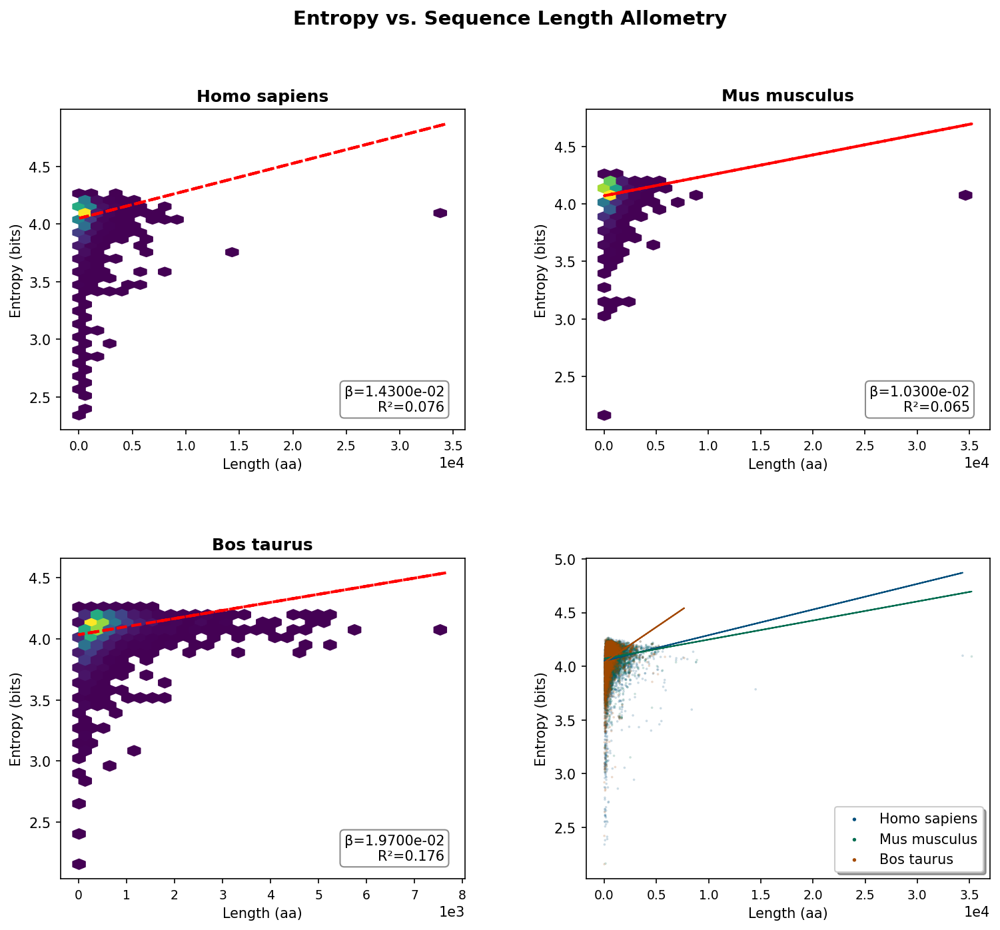
Sequence entropy shows minimal dependence on protein length, with very weak positive slopes (β = 0.01–0.02) across all organisms.
R² values of 0.065–0.176 mean length explains only 6.5–17.6% of entropy variance. So compositional complexity is governed by factors other than protein size.
The hexbin plots reveal extreme concentration at short lengths (<2,000 aa) with entropy values spanning 2.5–4.5 bits, showing that small proteins exhibit the full spectrum of sequence complexity—from highly repetitive (low entropy) to maximally diverse (high entropy).
Evolutionary pressures on sequence diversity operate independently of size constraints. This contrasts sharply with hydrophobicity.
5 PCA Variance
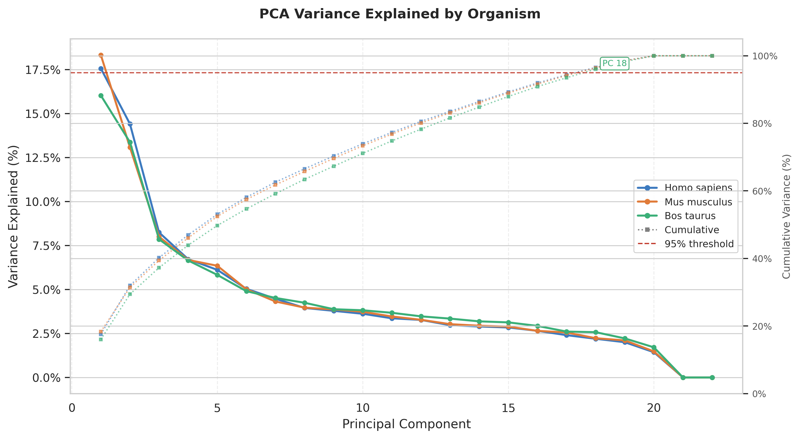
The scree plot shows that all three species share a strikingly similar pattern:
PC1 alone captures ~16–18% of variance, followed by a steep elbow through PC5, after which each additional component contributes only 2–4%. This rapid decay suggests the data has a small number of strong biological axes of variation, with the remainder spread diffusely across many weaker components.
The near-perfect overlap of all three curves implies the dimensionality structure of proteome/sequence composition is highly conserved across mammals.
The dotted cumulative curves (right axis) reinforce the above statement: 95% of variance is not reached until PC 18 (Bos taurus), meaning no single dominant axis exists and the signal is genuinely multi-dimensional.
This leads to important analytical implication that retaining only the first few PCs would discard the majority of information.
6 PC1 Loadings Interpretation
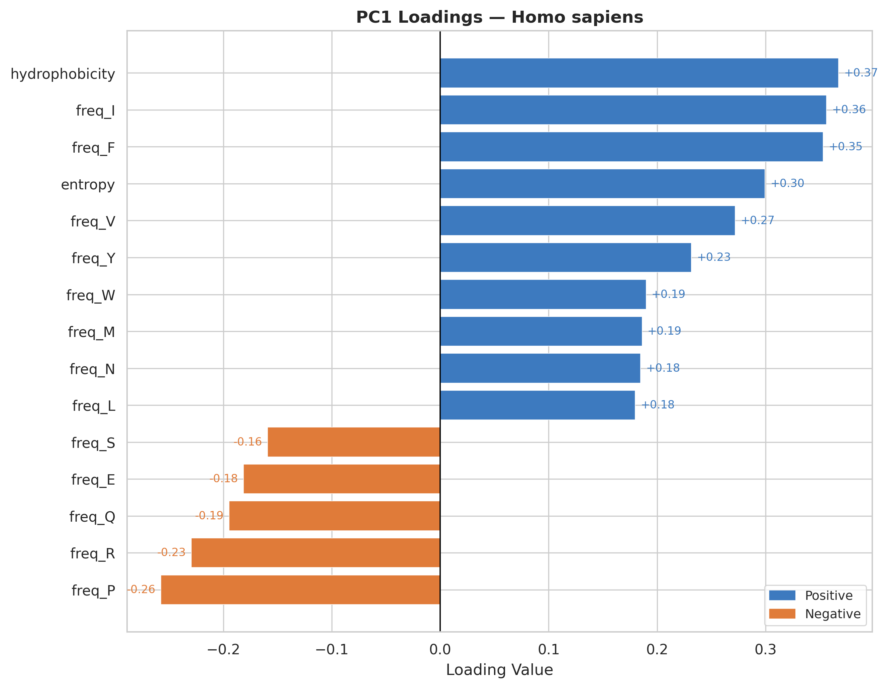
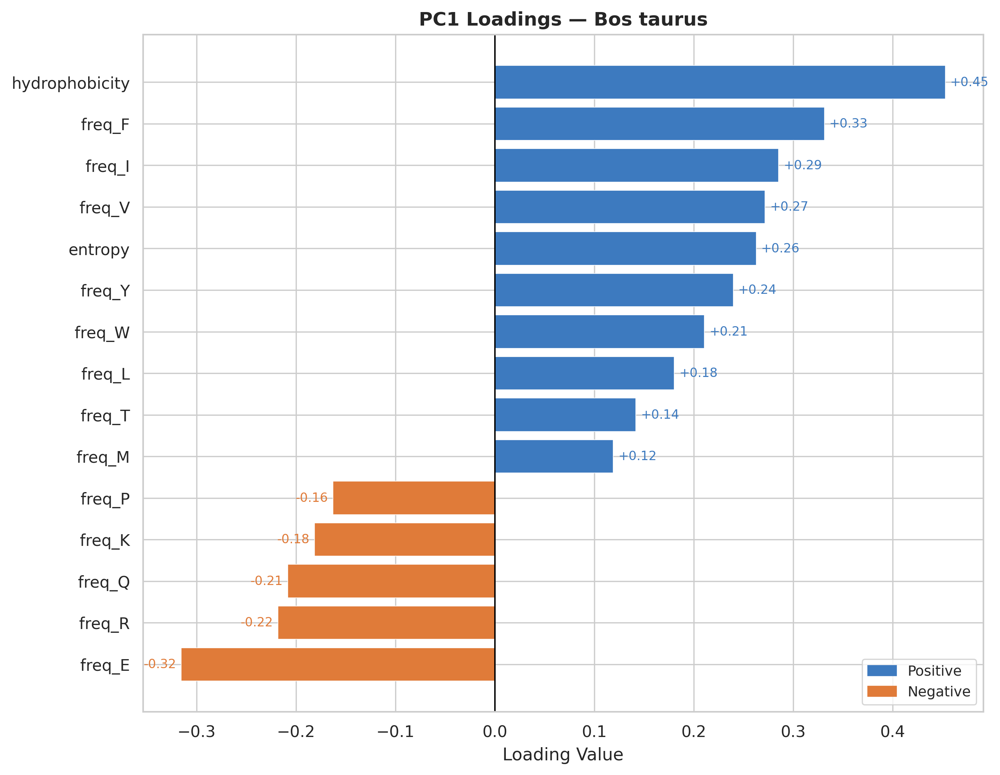
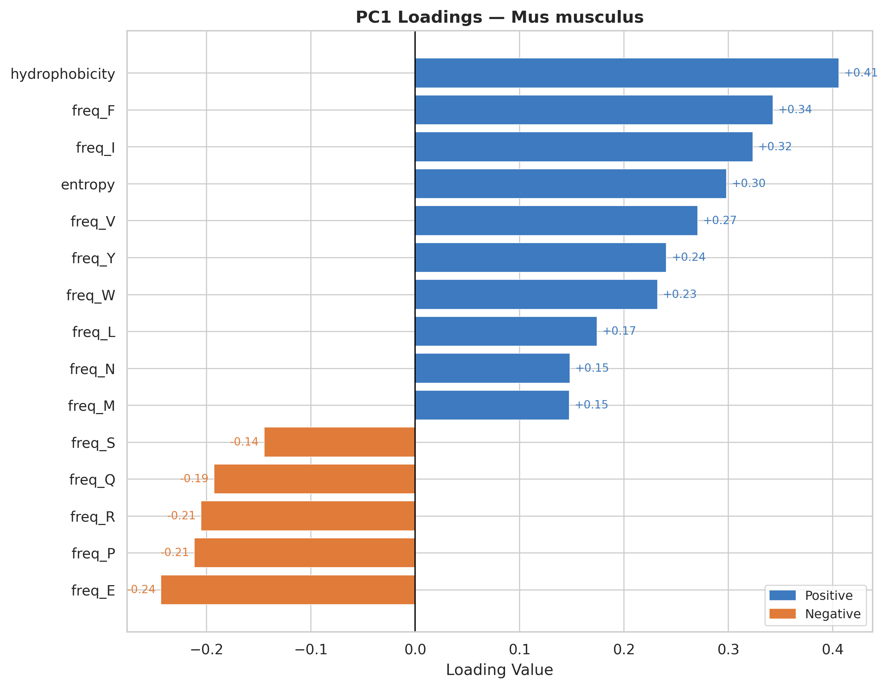
Hydrophobicity is the strongest positive contributor to PC1 across all organisms.
Hydrophobic amino acids consistently show positive loadings, suggesting PC1 captures proteins enriched in non-polar residues.
Charged/polar residues display negative loadings (check Feature Correlation section for reference), representing surface-exposed, soluble protein characteristics.
The loading patterns are remarkably consistent across all three organisms, indicating universal biophysical constraints on protein composition regardless of species.
PC1 effectively separates proteins by their structural topology & hydrophobic core dominated versus surface-exposed charged residue dominated architectures.
7 PC1 vs PC2
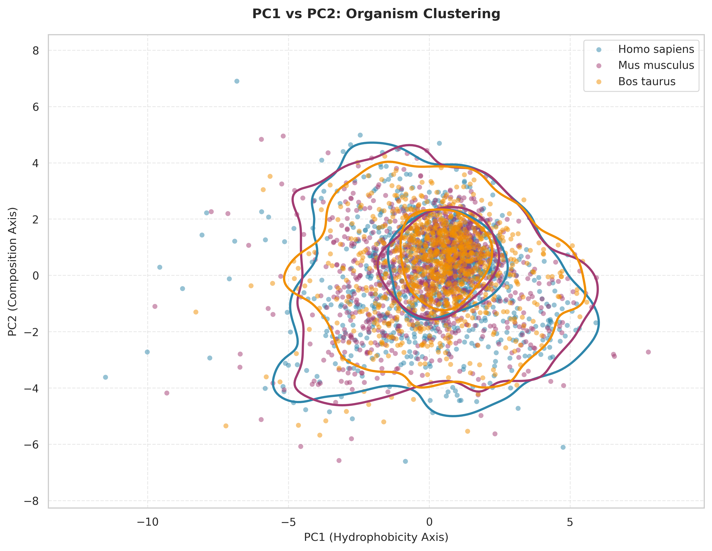
This scatter plot visualizes proteins from the three organisms projected onto the first two principal components derived from PCA. Each point represents a single protein positioned according to its PC1 and PC2 scores. The colored density contours (by kernel density estimation) show regions of highest protein concentration for each organism. Notice:
All three organisms occupy largely the same region of PC1-PC2 space, with no distinct clustering by species. The density contours substantially overlap, particularly in the central region around PC1=0, PC2=1.
The horizontal axis (PC1) represents the “hydrophobicity axis”, accounting for the largest variance in the dataset. Proteins with positive PC1 values are enriched in hydrophobic amino acids, while negative values indicate more hydrophilic compositions.
The vertical axis (PC2) represents the “composition axis”, capturing secondary variation related to amino acid composition patterns independent of overall hydrophobicity.
The substantial overlap indicates that despite ~100 million years of evolutionary divergence, mammalian proteins are constrained to similar physicochemical property spaces. The broader dispersion in human and mouse may reflect their larger, more diverse proteomes compared to cow, or potentially differences in annotation completeness across the data as the sample set was disproportionate by a lot.
8 Feature Distribution Comparison
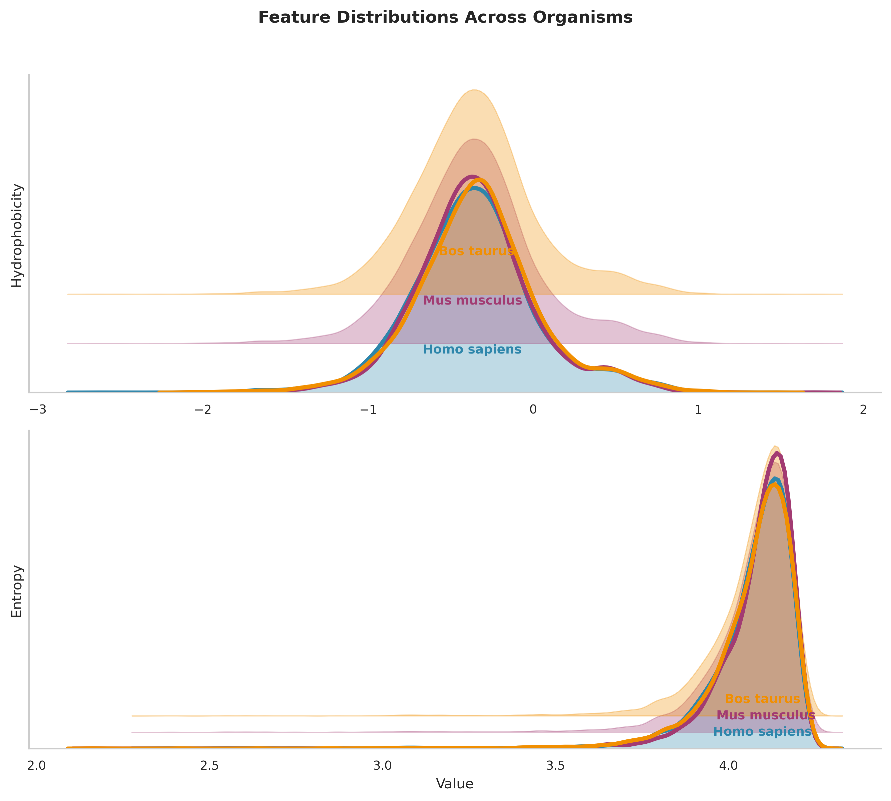
This plot displays the probability density distributions of hydrophobicity and entropy — a kernel density estimate showing the relative frequency of proteins with specific feature values.
8.1 Panel A (Hydrophobicity):
All three organisms show right-skewed distributions with a primary peak around -0.4 to -0.3, indicating most proteins have slightly negative overall hydrophobicity.
The peaks for all organisms are nearly perfectly aligned, with only minor differences in distribution width.
All distributions show a long right tail extending to +2.0, representing the minority of highly hydrophobic proteins (likely membrane proteins).
Slightly broader distribution (wider peak), suggests greater hydrophobicity diversity in the cow proteome.
8.2 Panel B (Entropy):
Extremely narrow, left-skewed distributions with sharp peaks around 4.1-4.2 bits, indicating most proteins have very similar sequence complexity.
The near-perfect alignment of entropy peaks across all three organisms is noticable, with virtually identical modal values.
The narrow spread suggests strong evolutionary constraints on sequence complexity, likely reflecting optimal balances between functional diversity and structural stability.
We can say this section only reinforced our previous findings as a whole.
9 Statistical Significance
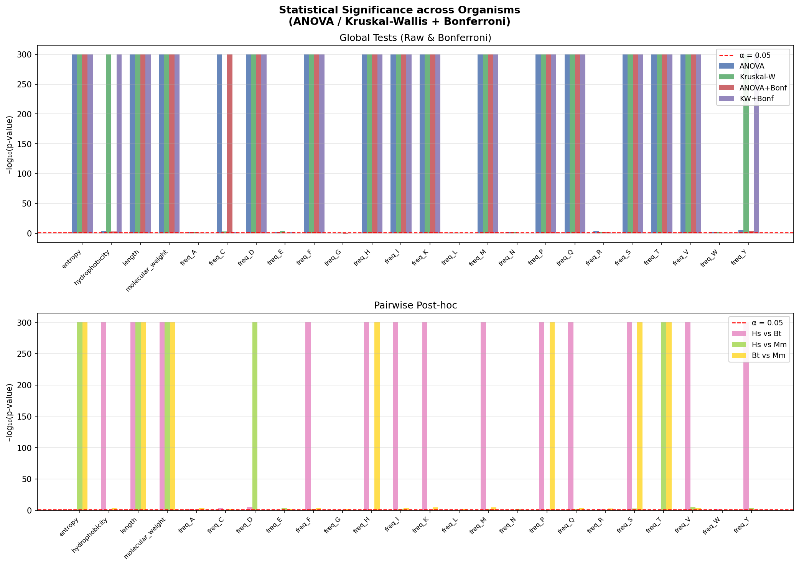
This analysis determines if protein feature distributions differ genuinely between Human(Hs), Mouse(Mm), and Cow(Bt) correcting for multiple testing to avoid false positives. The Y-axis (-log10(p-value)) measures strength of difference; bars above the red line (α = 0.05) are statistically significant. Ceiling bars (y=300) indicate p ≈ 0 (p < 10^-300), representing extremely strong differences.
Global Tests: Most features like Length, Weight, most amino acids, differ universally across all three species. Hydrophobicity is only significant in Kruskal-Wallis, suggesting outliers or non-normal distributions drive the difference.
Pairwise Drivers: Length/Weight differ across all organism pairs. Entropy distinguishes Mouse from the Human/Cow cluster, while Hydrophobicity distinguishes Human from Cow specifically.
Usage varies by residue; freq_T (Threonine) differs universally, while freq_A (Alanine) and freq_E (Glutamic Acid) are conserved across all three species.
This concludes while general physical properties (size, weight) diverge universally among mammals, compositional features reveal complex evolutionary relationships with some residues conserved and others only species-specific.
10 Physicochemical Property Gradients

The 4-panel grid displays the same t-SNE projection, each revealing a different aspect of proteomic organization. t-SNE preserves local structure, placing physicochemically similar proteins near each other in 2D space.
Panel A (Organism): All three species — intermix completely with no organism-specific clustering. This evidently indicates: evolutionary divergence has left no detectable species-specific signature at the global physicochemical level.
Panel B (Hydrophobicity): A smooth diagonal gradient runs from hydrophilic (bottom-left, ~−2.5) to hydrophobic (top-right, ~+1.0), with no sharp transitions. Proteins continuously balance solubility requirements against structural stability rather than partitioning into discrete classes.
Panel C (Entropy): High-entropy proteins (upper-left, ~4.25 bits) and low-entropy proteins (periphery, ~2.25 bits) show moderate spatial separation, suggesting sequence complexity correlates with specific physicochemical regions but is not the primary organizing axis.
Panel D (Molecular Weight): Molecular weight is largely independent of the axes captured by t-SNE, suggesting protein size evolves orthogonally to hydrophobicity and sequence complexity.
So this deduces mammalian proteomes occupy a continuous physicochemical manifold governed by universal biophysical constraints across species rather than discrete categories.
11 Cluster Quality — Silhouette Analysis
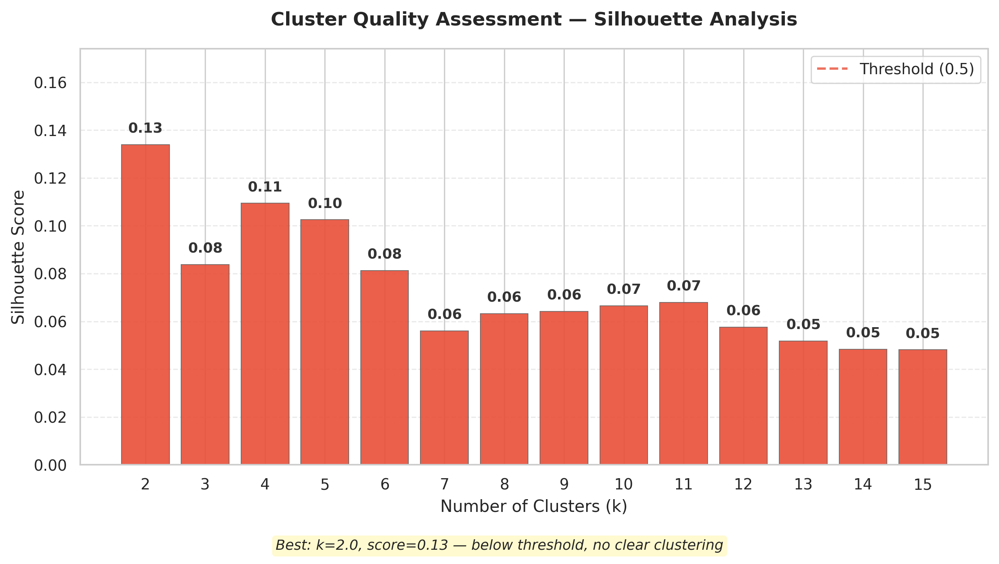
The bar chart above shows silhouette scores for K-means clustering at k = 2–15. Scores range from −1 (poor) to +1 (excellent); the dashed line at 0.5 marks the conventional threshold for meaningful structure.
- All scores fall far below 0.5, ranging from 0.05 (k = 14–15) to 0.13 (k = 2). Scores decline steadily with increasing k and plateau around 0.05–0.07 beyond k = 7 — adding clusters provides no additional insight. Even the best solution (k = 2, score = 0.13) fails the threshold decisively.
Interpretation: Proteins do not naturally partition into discrete physicochemical groups. Categorical labels like “hydrophobic” vs. “hydrophilic” impose artificial structure on what is fundamentally a continuous distribution. This negative result rules out clustering as an appropriate framework and points toward gradient-based or manifold-learning approaches.
12 Extreme Proteins — Outlier Analysis
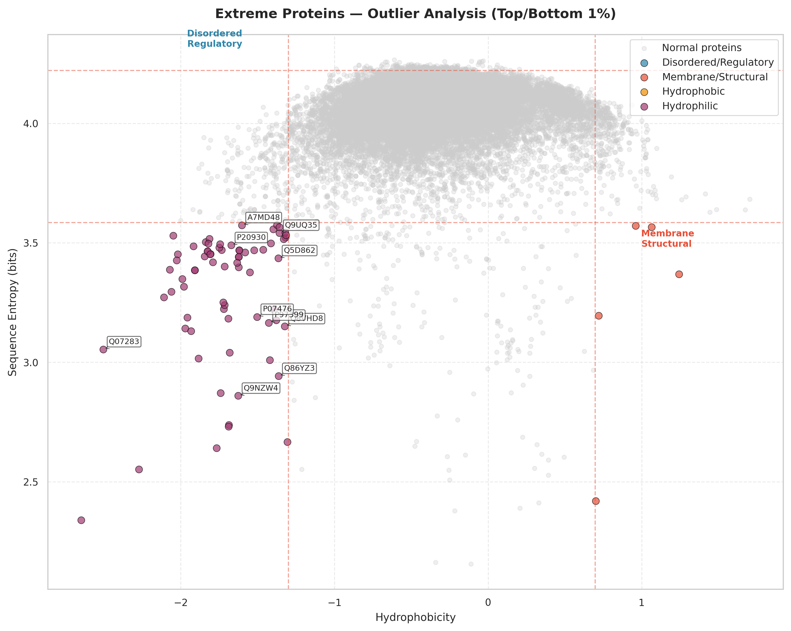
This scatter plot maps all proteins in hydrophobicity–entropy space. The dense central cloud (gray) represents typical proteins; colored points are outliers falling in the top/bottom 1% of both features simultaneously. Dashed lines mark the thresholds.
Most proteins cluster around hydrophobicity ≈ −0.5 to 0.0 and entropy ≈ 3.8–4.2 bits — moderately hydrophilic with intermediate sequence complexity.
Low hydrophobicity + high entropy specifying intrinsically disordered and regulatory proteins (transcription factors, signaling proteins) that require conformational flexibility and multiple interaction partners. Low hydrophobicity prevents aggregation despite disorder!
High hydrophobicity + low entropy ones likely membrane proteins and structural components with repetitive motifs (transmembrane helices, collagen repeats). Few proteins reach this extreme.
Extremely low hydrophobicity with variable entropy ones are highly soluble, secreted or cytosolic proteins enriched in charged residues.
Very few proteins combine high hydrophobicity with high entropy; this combination promotes aggregation and is selected against.
This analysis zooms into the tails of the t-SNE landscape and explains the poor clustering — outliers are extreme points on continuous gradients, not members of separate categories.